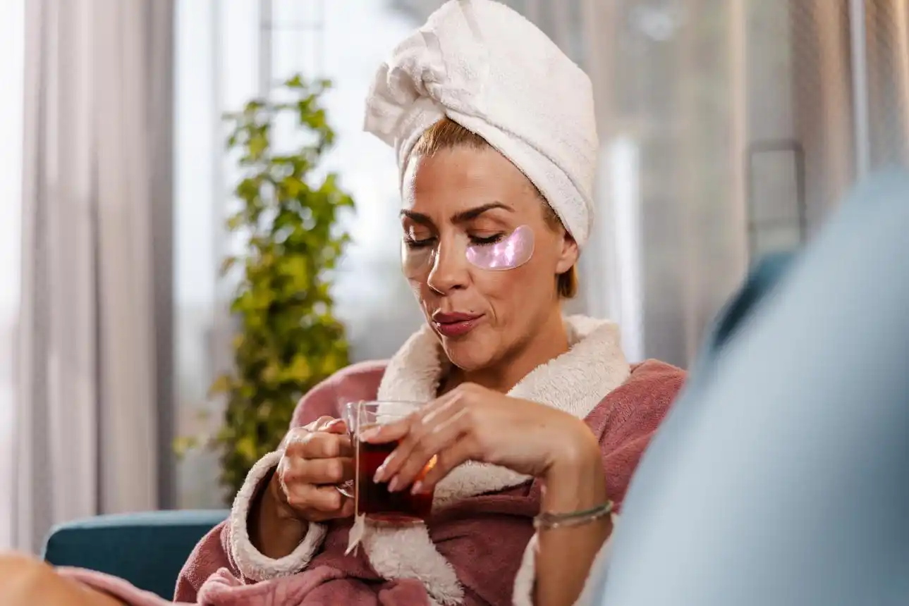

💧 Hydration
Drinking enough water can help your body feel better overall. It is not magic, but it is still one of the simplest healthy habits to build.
Skincare is not only about what we apply to our face. Sleep, hydration, gentle routines, and daily habits can also support the way our skin looks and feels.
Some people enjoy connecting skincare with calming habits, like drinking water, resting well, preparing herbal tea, or taking a few quiet minutes at night.
Glow Guide focuses on simple wellness habits that can make your routine feel less stressful and more personal.
Drinking enough water can help your body feel better overall. It is not magic, but it is still one of the simplest healthy habits to build.
Sleep gives your body time to recover. A calm evening routine can help your skin feel peaceful instead of rushed.
Warm tea can be part of a relaxing self-care routine. Ingredients like cinnamon, ginger, hibiscus, or apple can make the habit feel cozy and enjoyable.
Gentle daily movement can support general wellness. Even a short walk can help you feel more refreshed.
A warm cup of tea can turn a skincare routine into a peaceful moment at the end of the day. It does not replace medical care or skincare products, but it can help create a calming habit.
Think of it as a small pause: wash your face, apply moisturizer, make tea, breathe, and let the day finally stop being dramatic.
